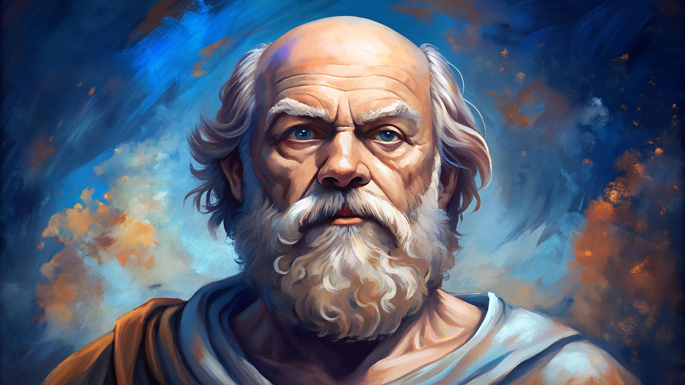
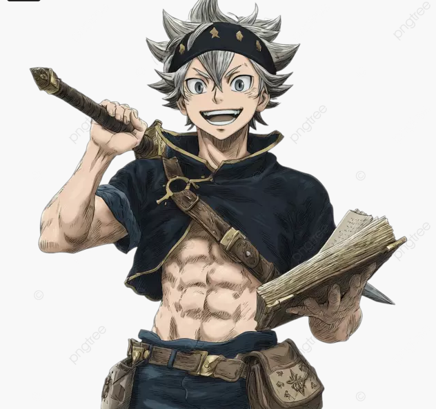
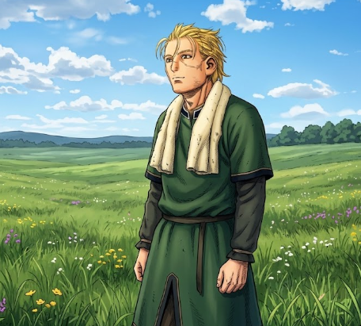
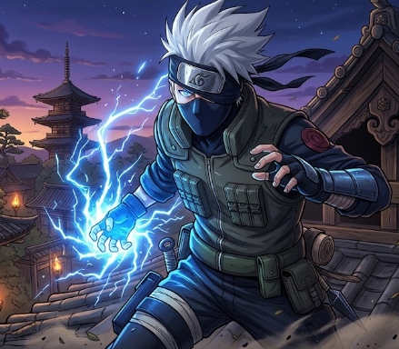
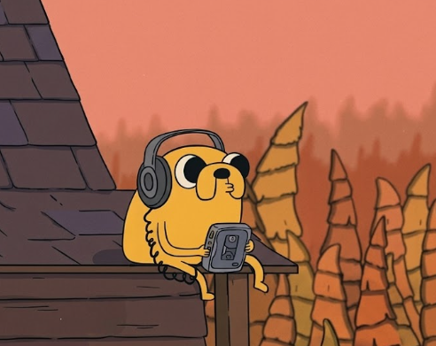
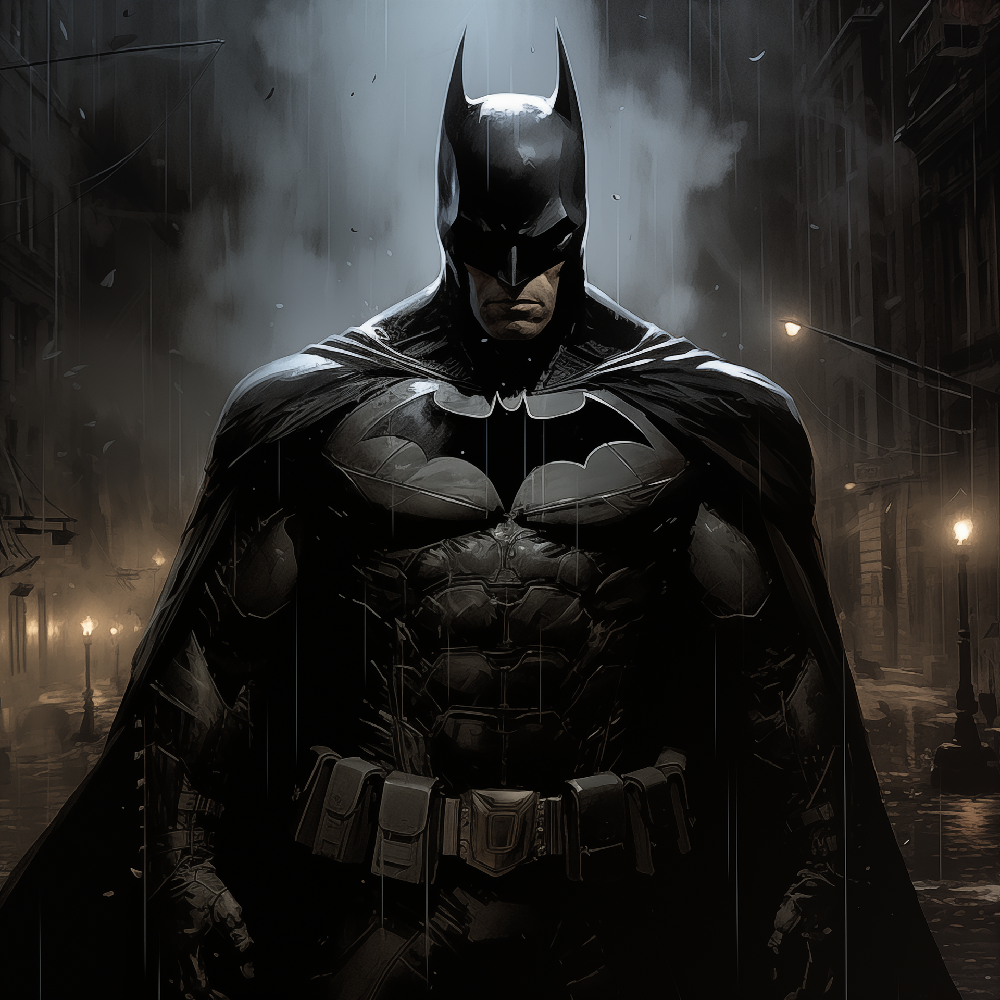

Personajes Históricos
Albert Einstein: "Hay dos maneras de vivir la vida: una es como si nada fuera un milagro; la otra es como si todo fuera un milagro."

Sócrates:"La verdadera sabiduría está en reconocer la propia ignorancia."
Nizar Qabbani:"En mis sueños eres mía... en la realidad dire que eres mi sueño."
Personajes de anime

Asta (Black Clover):"¡No me subestimes, destino! ¡Voy a lograrlo! No me importa si me tardo uno, diez o cien años. Me esforzaré todo lo que pueda hasta conseguir mi objetivo. Voy a ser el Rey Mago y demostraré que, aunque seas pobre o huérfano, todo el mundo puede llegar a ser alguien increíble."

Thorfinn:"¿Tu crees que la gente la gente pueda cambiar?. ¿Que se necesita para hacerlo?"

Kakashi Hatake:"Un ninja debe ver a traves de la decepción, en el mundo ninja aquellos que rompen las reglas. ¡Son escoria! es cierto, pero... aquellos que abandonan a un amigo son peor que la escoria."
Personajes animados

Jake El Perro:"Ser malo en algo es el primer paso para ser bueno en eso."

Batman:"No es lo que soy por dentro, sino lo que hago lo que me define."
Spiderman:“No importa lo fuerte que seas. Todos necesitamos ayuda a veces.”
Sugerencias de frases
Resumen de personajes
| Personaje | Categoria | Tema |
|---|---|---|
| Albert Eintein | Historico | Imaginacion |
| Asta | Anime | Perseverancia |
| Batman | Animado | Identidad |
Categorias
- Personajes Historicos
- Persoanjes de Anime
- Personajes animados
Como usar el sitio
- Elige una categoria en el menu.
- Mira la imagen del persoanje.
- Lee su frase.